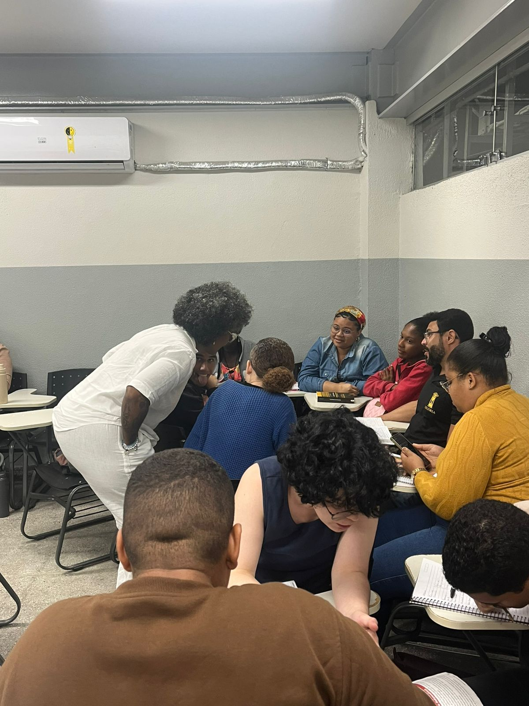

← Voltar aos professores

Trajetória no curso
Uma nova trajetória no ano dos 20 anos
Aline Najara da Silva Gonçalves ingressou como docente efetiva do Curso de História da UFRB em 2026, ano em que a Licenciatura celebra seus 20 anos. Sua atuação se situa nas áreas de História, Historiografia e Ensino.
Sua chegada passa a integrar um novo momento da trajetória do curso, aproximando sua experiência docente das histórias, práticas de formação e relações construídas no CAHL ao longo das duas primeiras décadas da Licenciatura.
Ingresso: 2026
Docente efetiva
História
Historiografia
Ensino
Depoimento
Chegar no ano dos 20 anos
Chegar à Licenciatura em História da UFRB no ano em que o curso celebra seus 20 anos é uma alegria! Ainda estou iniciando minha trajetória aqui, mas já me sinto parte de uma história construída por tantas pessoas que acreditam na potência da Educação e da formação em História.
Sendo uma professora preta, é especialmente significativo chegar a uma universidade que é celebrada por ser a universidade “mais preta do Brasil” e que tem na equidade, no respeito às diversidades e no acolhimento dimensões fundamentais de sua identidade. É uma honra fazer parte dessa história e aprender com seu percurso.
“Espero contribuir com meu trabalho e minha presença para a construção dos próximos capítulos dessa História.”
Vida docente
Primeiros registros no curso

Sala 4 · CAHL · 2026
Aula de Metodologia do Ensino de História
Registro de uma aula da Licenciatura em História da UFRB em que Aline Najara Gonçalves, em diálogo próximo com estudantes, conduz uma atividade de aprendizagem coletiva.
A imagem registra a sala de aula como espaço de encontro, escuta, participação e construção compartilhada do conhecimento.
Produção acadêmica
Produção docente
Conheça a produção de Aline Najara Gonçalves
A página de produção reúne livros, capítulos, artigos e outros registros bibliográficos associados à trajetória acadêmica da docente.
Ver produção docente →
Memorial em construção
Uma trajetória que começa em 2026
Como Aline ingressou no curso no ano do vigésimo aniversário, esta página registra também o início de uma trajetória. Novos momentos de ensino, pesquisa, extensão, orientação e vida acadêmica poderão ser incorporados ao Memorial ao longo dos próximos anos.